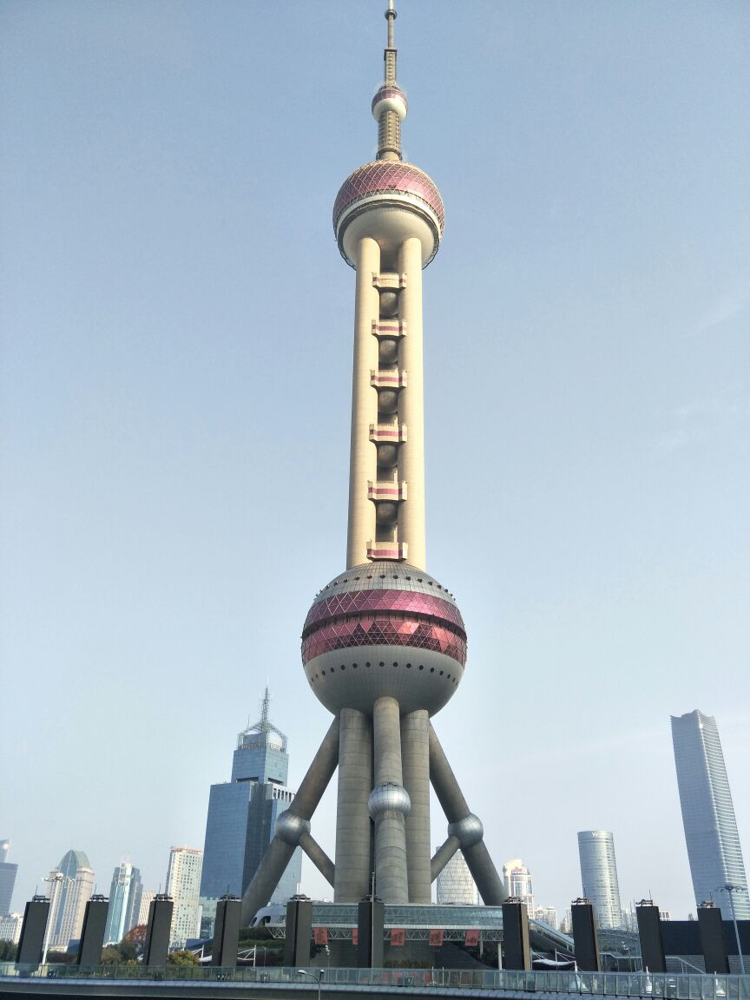
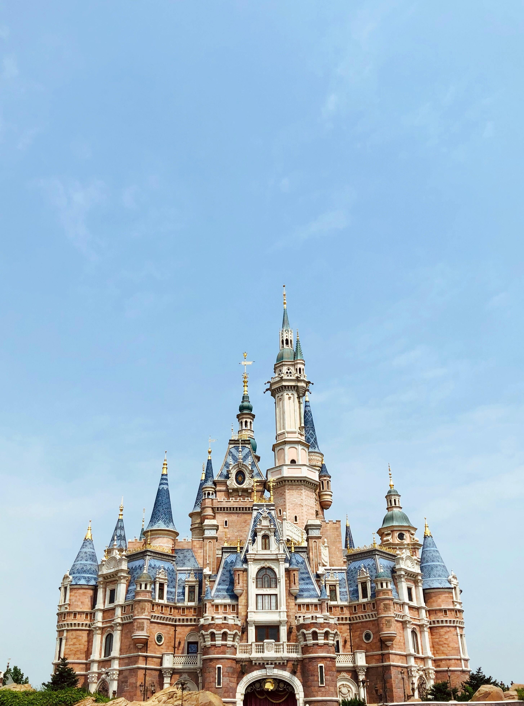
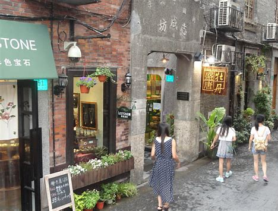
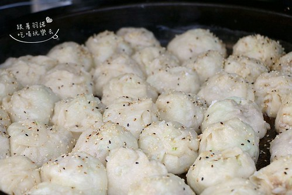

Shanghai: A City of Contrasts
Shanghai, an iconic East Asian city, is a dynamic blend of past and present. In the 19th century, it grew into a key trading port, welcoming international commerce and cultures. This led to a unique aesthetic, with Western architecture melding with traditional Chinese elements. Today, Shanghai is China's economic powerhouse and a global financial center. Its skyline of skyscrapers showcases its modern, innovative status. It serves as a hub for international business, hosting multinationals and world-class events.
Culturally, Shanghai offers a rich mix. Deeply rooted in Chinese traditions, it also embraces contemporary global trends. Here, old-world customs coexist with avant-garde art, music, and fashion. With a well-developed transport and diverse accommodations, Shanghai attracts travelers worldwide, offering an experience that captures China's past and present allure.
Shanghai Highlights

Getting There and Away
By Air
Shanghai has two major airports. Shanghai Pudong International Airport (PVG) is the main international gateway, offering flights to destinations globally. Shanghai Hongqiao International Airport (SHA) mainly operates domestic flights, with some short-haul international ones. Airlines from different countries land at these airports, facilitating international travel.
By Train
The city has four major railway stations: Shanghai Railway Station, Shanghai South Railway Station, Shanghai West Railway Station, and Shanghai Hongqiao Railway Station. All are well-connected to the metro. Shanghai is linked to other Chinese cities by high-speed railways like the Beijing–Shanghai HSR, Shanghai–Nanjing intercity railway, Shanghai–Kunming HSR, and Shanghai–Nantong railway.
By Sea
Cruising to Shanghai is an option. Many cruise lines include it as a port of call. Cruise ships dock at the port in Pudong district, from where you can easily access the city.
Getting Around Shanghai
Metro
The Shanghai Metro is a convenient and efficient way to get around. It covers most parts of the city. You can purchase single-trip tickets at metro station ticket vending machines. Additionally, using a Shanghai Transportation Card is more convenient. The card can be topped up at stations and is widely accepted. You can also pay via mobile payment apps like Alipay or WeChat Pay at the ticket gates in many stations.
Bus
Shanghai has an extensive bus system with nearly a thousand lines. Bus fares are usually around ¥2. To pay, you can use cash, but it's better to have the exact amount. Mobile payment via Alipay or WeChat Pay is also available on most buses. Just scan the QR code on the bus payment device. However, be aware that traffic congestion during peak hours may slow down the journey.
Taxi / Ride-hailing
Taxis are easily available in Shanghai. They are metered, and the fare depends on distance and waiting time. Make sure the driver uses the meter. You can hail a taxi on the street or find them at taxi stands outside major public places. Besides traditional taxis, ride-hailing services are also popular. You can use apps like Didi Chuxing to book a ride. The fare is calculated based on the app's algorithm.
Ferry
The ferry service across the Huangpu River offers great views of the city skyline, especially of the Bund and Lujiazui. It's both a means of transportation and a tourist experience. There are 17 ferry lines serving nearly 40 stations. Commonly used lines for tourists include Nan Lu, Dong Fu, and Dongjin. Stations offer self-service ticketing (Alipay, WeChat Pay, Transportation Card, cash).
Cycling
Cycling is popular in areas with dedicated bike lanes. You can rent a bike from bike-sharing services like Meituan Bike and Hello Bike using their apps. Not all areas allow cycling; use map apps (Baidu, Google) to check routes and find bike locations.
Famous Attractions
The Bund
Lined with 52 Western-style buildings, The Bund offers a unique view of Shanghai's past and present. Admire the harmonious blend of architecture, and at night, the illuminated buildings and the Bund light show are truly captivating.
Oriental Pearl Tower
An iconic symbol of Shanghai, it provides 360-degree views of the city. The revolving restaurant and observation decks at different heights let you enjoy the skyline. Its unique design makes it a must-visit.
Yu Garden
This classical Chinese garden is a haven of tranquility. With pavilions, rockeries, and ponds, it showcases the elegance of traditional Chinese gardening. It's a great place to escape the city hustle.
Shanghai Disneyland
A magical world for all ages, it features thrilling rides, parades, and shows. Meeting beloved Disney characters and enjoying the immersive atmosphere make it a top-choice destination for family fun.
Wukang Building
Built in 1924, this unique ship-shaped building by Ladislav Hudec features a French Renaissance style. Its unique facade and location have made it a popular photo spot, housing cafes and boutiques.
Tianzifang
Located in Huangpu District, Tianzifang is a charming area filled with narrow alleys (shikumen). Explore art galleries, unique handicraft stores, and cozy cafes, blending old Shanghai with modern creativity.
Cultural Experiences
Shanghai-Style Paper-cutting Workshop
Learn the art of Shanghai-style paper-cutting. The intricate patterns and hands-on experience let you create your own masterpiece, understanding the local folk art better.
Shanghai Alleyway Exploration
Wander through the narrow alleyways (longtang). You can see local life up close, visit small shops, and feel the real Shanghai atmosphere away from the main streets.
Tea-Tasting in a Traditional Teahouse
Relax in a traditional teahouse and savor various Chinese teas. The ceremony and the taste of different teas offer a glimpse into Chinese tea culture and the art of slow living.
Delicious Shanghai
Shanghai's cuisine is a delightful blend of local specialties and influences from all over China. Here are some dishes you shouldn't miss:
Shengjianbao (Pan-fried Buns)
These buns have a crispy, golden-brown bottom and a soft, fluffy top, filled with savory minced meat and soup. The pan-frying method gives them an irresistible flavor.
Xiaolongbao (Soup Dumplings)
Delicate and bite-sized, each xiaolongbao is filled with juicy pork and a bit of soup, encased in a thin wrapper. Pop one in your mouth to savor the rich, savory taste.

Yangchun Noodles
Simple yet satisfying, made with thin wheat noodles in a clear, flavorful broth seasoned with soy sauce, scallions, and a touch of lard. Offers a light, fresh taste.
Shanghai-style Fried Rice Cake
Soft and chewy rice cakes are fried to a golden brown, seasoned with soy sauce and sometimes paired with shredded meat or vegetables. A local favorite for its texture and flavor.
Paigu Niangao (Spare Ribs with Rice Cakes)
Tender spare ribs cooked with soft, chewy rice cakes. The ribs are marinated in a savory sauce, and the rice cakes soak up the rich flavor. A filling combination of textures and tastes.
Xie Ke Huang (Crab-Shell-Shaped Pastry)
Shaped like a crab shell, this pastry has a crispy exterior and can be filled with various savory fillings like minced meat or scallions. A popular snack.
Crab Roe Noodles
Fresh, handmade noodles topped with generous amounts of rich, creamy crab roe. The roe's intense, savory flavor pairs perfectly with the smooth noodles. A luxurious treat.

Qingtuan (Green Rice Balls)
A seasonal specialty made from glutinous rice flour dyed green with mugwort juice. Often filled with sweet red bean paste. Soft, chewy, with a fresh, herbal aroma.
Fresh Meat Mooncakes
Unlike traditional sweet mooncakes, these are savory with a flaky crust and tender, marinated minced pork filling. Baked golden brown, popular during the Mid-Autumn Festival.
Accommodation
Nanjing Road Pedestrian Street Vicinity
A shopper's paradise near Nanjing Road with department stores and brand shops. Well-connected by subway. Offers a lively urban feel with street food and vibrant atmosphere.
Yu Garden Bazaar Neighborhood
Adjacent to Yu Garden, rich in traditional culture with Chinese restaurants and handicraft stores. Convenient transport. Experience old Shanghai charm.
Changning Road Area around Zhongshan Park
Offers a green retreat with Zhongshan Park, shopping malls, and local markets. Easy subway access. Budget-friendly to mid-range options.
Hongqiao Transportation Hub Periphery
Extremely convenient with access to high-speed trains, subways, and buses. Ideal for travelers on the go. Many hotels and guesthouses available.
Weather Guide
Cold and Damp (Dec - Feb)
Near 0°C (32°F), feels colder due to humidity. Need thick down jackets, thermal layers, scarves, gloves. Layering is key.
Cool and Transitional (Mar - Apr & Oct - Nov)
10°C - 20°C (50°F - 68°F). Long sleeves, light sweaters, wind-resistant jacket or cardigan. Jeans/light pants. Umbrella needed.
Warm and Comfortable (May & Sep)
20°C - 25°C (68°F - 77°F). Lightweight cotton shirts, blouses, long sleeves, skirts, thin pants. Comfortable walking shoes.
Hot and Humid (Jun - Aug)
25°C - 35°C (77°F - 95°F). Light, breathable cotton/linen shorts, T-shirts, dresses. Sandals. Carry a light shawl for strong AC. Sunscreen, sunglasses, hat essential.
Must-Do List
- Walk along The Bund, marveling at the mix of colonial-era and modern skyscrapers.
- Take an elevator up the Oriental Pearl Tower for a bird's-eye view of Shanghai.
- Immerse yourself in the magic of Shanghai Disneyland, enjoying thrilling rides and parades.
- Wander through Yu Garden, appreciating traditional Chinese garden design.
- Dive into Shanghai's history at The Bund History Museum.
- Indulge in authentic xiaolongbao at well-known local dumpling shops.
- Bite into the juicy shengjianbao, a Shanghai pan-fried specialty.
- Savor Shanghai-style noodles, perhaps with braised eel or pork belly.
- Explore Yunnan South Road Food Street, tasting diverse local snacks.
- Enjoy a Huangpu River cruise, seeing Shanghai's landmarks by water.
- Experience local life at a wet market like Tongji University Farmers' Market.
- Shop on Nanjing Road, one of the world's busiest shopping thoroughfares.
- Discover hidden treasures in the alleys of Tianzifang.
- Watch the nighttime light show at Jing'an Temple.
Classic Tour Itineraries
Two-Day Heritage and Modernity Route
Day 1: Arrive, check in near The Bund. Walk The Bund. Explore Yu Garden & Bazaar (snacks). Dinner (xiaolongbao), night view of The Bund.
Day 2: Visit Oriental Pearl Tower (views). Stroll Nanjing Road (shopping/people-watching). Evening Huangpu River cruise. Depart.
Three-Day Culinary and Cultural Route
Day 1: Arrive, check in. The Bund. Shanghai Museum. Dinner in French Concession, stroll.
Day 2: Local alley food tour (shengjianbao, stinky tofu). Watch Yue Opera. High-end dinner.
Day 3: Explore Tianzifang (boutiques, galleries). Visit Propaganda Poster Art Centre. Dinner in Tianzifang. Depart.
Four-Day Family-Friendly Route
Day 1: Arrive, check in. The Bund (history). The Bund History Museum. Riverside dinner.
Day 2: Full day at Shanghai Disneyland (rides, shows, fireworks).
Day 3: Shanghai Zoo. Shanghai Science and Technology Museum.
Day 4: Morning activity (e.g., Yu Garden revisit or shopping). Depart.